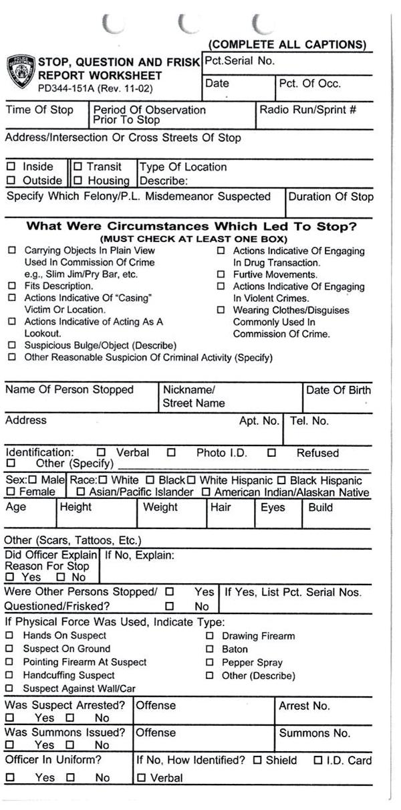
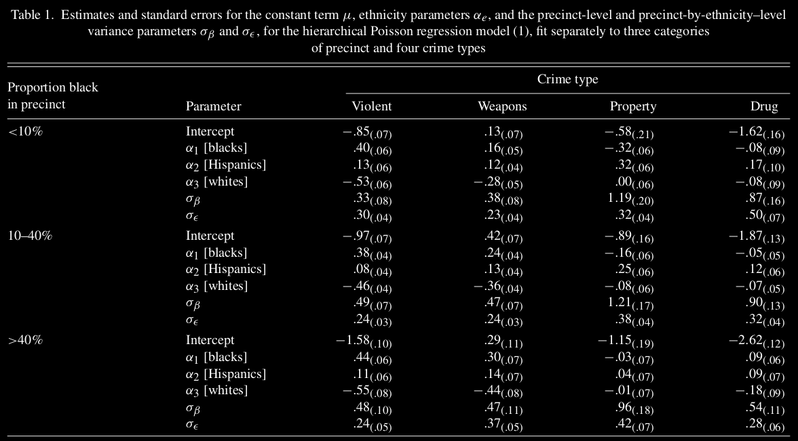
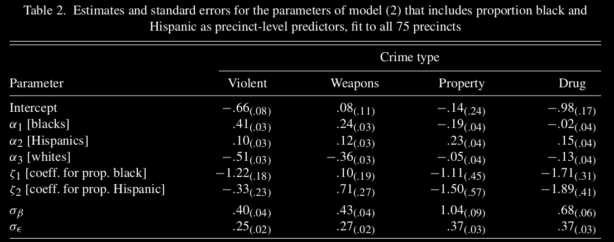

An Analysis of the New York City Police Department’s “Stop-and-Frisk” Policy in the Context of Claims of Racial Bias
- Andrew Gelman, Jeffrey Fagan & Alex Kiss (2007)
Paper Presentation
Statistics Comprehensive
Question : Bias in police stops?
Concerns:
-
In the late 1990s, concerns were raised across US about police harassment of minority groups.
-
Allegedly, police were stopping people on the highways for driving while black.
-
Racial bias in pedestrian stops of citizens in the name of zero-tolerance policies to control quality-of-life crimes.
These practices prompted angry reactions among minority citizens.
Why NYPD?
New York City’s policing strategy, during the 1990s, involved aggressive stops and searches of pedestrians for a wide range of crimes.
“Temporarily detaining, questioning, and, at times, searching civilians on the street”.
The strategy, known as New York Strategy, is credited as a major source of the city’s sharp crime decline.
Why NYPD?
But, there were complaints of harassment of minority communities, especially by the Street Crimes Unit.
Events such as,
-
Well-publicized assault by police of Abner Louima
-
Shootings of Amadou Diallo and Patrick Dorismond
Aggressive “stop and frisk” tactics ultimately provoked racial bias in the patterns of “stop and frisk”.
Were the police disproportionately stopping ethnic minorities?
- Analyze the rates at which New Yorkers of different ethnic groups were stopped by the police on city streets.
Outline:
-
Background
-
Data collection
-
Summary Statistics
-
Models
-
Conclusion
Background : Race, Neighbourhoods, and Police Stops
-
Historically, close surveillance by police has been a part of everyday life for African-Americans.
-
In 1996, court allowed the use of race as a basis for a police stop as long as there were other factors.
-
The legal standard for police conduct sets some parameters for “reasonable suspicion”.
-
Recently, the courts have expanded the concept of “reasonable suspicion” to include location as well as behaviour.
-
Two nationwide surveys ('99 & '02) showed that African-Americans were far more likely than others to report being stopped on the highways.
-
Minority drivers also were more likely to report being ticketed, arrested, handcuffed, or searched.
-
In 2001, a study showed that of the drivers on I-95 in Maryland stopped on suspicion of drug trafficking, African-Americans were as likely as whites to have drugs in their cars.
Police have defended these claims on the grounds that,
-
“High-crime areas” often have high concentrations of minority citizens.
-
Minorities commit disproportionately more crimes than whites & hence, more aggressive enforcement in minority communities is justified.
-
Higher stop rates of minorities simply represent reasonable and efficient police practice.
Data Collection
UF-250 Form : Keeping records on stops

Data Collection
Information was collected for all stops from January 1998 through March 1999.
About 175,000 stops were recorded in that period.
The police are not required to fill out a form for every stop.
-
Mandated cases : $72\%$
-
Non-mandated cases : $28\%$ (reporting was optional)
The form has one field: “Factors which caused officer to reasonably suspect person stopped (include information from third persons and their identity, if known).”
These forms and the reasons for the stops were examined for a citywide sample of 5,000 cases, along with 10,869 others, representing 50% of the cases in a nonrandom sample of 8 of the 75 police precincts.
Data Collection : Examples
Here are some examples that motivated police decisions to stop suspects:
“At TPO male was with person who fit description of person wanted for GLA [grand larceny auto] in 072 pct. log . . . upon approach male discarded small coin roller which contained 5 bags of alleged crack.”
“Did have on a large bubble coat with a bulge in right pocket.”
“Person stopped did stop walking and reverse direction upon seeing police. Attempted to enter store as police approached; Frisked for safety.”
The New York State Attorney General’s office used some rules to characterize the rationales of the stops.
-
Reasonable suspicion : $61\%$ (1 in 7 led to arrest)
-
Not reasonable : $15\%$ (1 in 29 led to arrest)
-
Insufficient information : $24\%$
For Street Crimes Unit, 23% of stops were judged to not have a reasonable suspicion.
There was no strong pattern by ethnicity here. The rate of unreasonable stops was about the same for all ethnic groups.
Classification:
The following groups were considered:
-
Blacks / African-Americans ($51\%$ stops) [$26\%$ of city population]
-
Hispanics / Latinos ($33\%$ stops) [$24\%$ of city population]
-
Whites / European-Americans ($12\%$ stops) [$43\%$ of city population]
Others represented only $4\%$ of stops, and excluded.
Crimes were categorized:
-
Violent crimes ($25\%$ stops)
-
Weapons crimes ($24\%$ stops)
-
Property crimes ($20\%$ stops)
-
Drug crimes ($11\%$ stops)
Aggregate Rates of Stops for Each Ethnic Group

____ Blacks, ---- Hispanics, .... Whites
Aggregate Rates : Limitations
It has certain limitations:
-
Comparison without adjusting for different crime rates by different ethnic groups.
-
Ignoring precinct level effects.
A more relevant comparison may be done w.r.t. the number of crimes committed by members of each ethnic group.
“The racial/ethnic distribution of the subjects of 'stop and frisk' reports reflects the demographics of known violent crime suspects as reported by crime victims. Similarly, the demographics of arrestees in violent crimes also correspond with the demographics of known violent crime suspects.”
- Howard Safir, NY City Police Commissioner, '99
Aggregate Rates adjusted for ethnic groups
Let $y_e$ denote the number of stops for ethnic group $e$, $e=1\text{ (black)},2\text{ (hispanic)},3\text{ (white)}$
Similarly $n_e$ denotes the number of "crimes" for ethnic group $e$, $e=1,2,3$
We can compare $\left(\frac{y_e}{n_e}\right)$ values to see if stop rates are reflection of crime rates.
$y_e$ values are easily available from the dataset. But $n_e$ is unknown.
So as a proxy for $n_e$, the number of arrests within NY in 1997 was used. It was recorded by the Division of Criminal Justice Services (DCJS).
Using those values, (adjusted to 15-month period)
$$\frac{y_1}{n_1}=1.54\text{ , }\frac{y_2}{n_2}=1.73\text{ , }\frac{y_3}{n_3}=1.24$$
i.e., blacks are stopped 23% more often than whites and Hispanics are stopped 39% more often than whites.
Model
Things to keep in mind:
-
Suppose that, police make more stops in high-crime areas but treat the different ethnic groups equally within any locality.
-
Police often enforce / emphasize local, neighbourhood-level strategies.
-
It is possible that the patterns are systematically different in neighbourhoods with different ethnic compositions.
Model
For each ethnic group $e\in\{1,2,3\}$ & precinct $p$, the number of stops $y_{ep}$ assumed to be a Poisson random variable with mean $\lambda_{ep}$.
Poisson regression model was used, i.e., $log(\lambda_{ep})$ is a linear combination of predictors.
$$log(\lambda_{ep})=log\left(\frac{15}{12}n_{ep}\right)+\mu + \alpha_e+\beta_p+\epsilon_{ep}$$
-
$n_{ep}\rightarrow$ Arrest rates of last year (from DCJS)
-
$\frac{15}{12}n_{ep}\rightarrow$ Adjusted to a 15-month period. It serves as a baseline for $\lambda_{ep}$
-
$\mu\rightarrow$ Mean effect
-
$\alpha_{e}\rightarrow$ Ethnicity effect (constraint: $\sum \alpha_e=0$)
-
$\beta_p\rightarrow$ Precinct effect $|\text{ }\beta_p \sim N(0, \sigma_\beta^2)$
-
$\epsilon_{ep}\rightarrow$ Overdispersion $|\text{ }\epsilon_{ep}\sim N(0, \sigma_\epsilon^2)$
Model
$$y_{ep}\sim Poisson\left(\frac{15}{12}n_{ep}e^{\mu+\alpha_e+\beta_p+\epsilon_{ep}}\right)$$
$$\beta_{p}\sim N(0, \sigma_\beta^2)$$
$$\epsilon_{ep}\sim N(0, \sigma_\epsilon^2)$$
Model fitted using Bayesian inference with a noninformative uniform prior distribution on the parameters $\mu$, $\alpha_e$, $\sigma_\beta$, $\sigma_\epsilon$
Precincts categorized: (ethnic compositions can cause different patterns)
-
$<10\%$ black population
-
$10-40\%$ black population
-
$>40\%$ black population
Corresponding to 4 crime types & 3 precinct categories, 12 separate models were fitted in 12 disjoint subsets of the dataset.
Estimates from the model

Estimated rates $e^{\mu+\alpha_e}$ at which people of different ethnic groups were stopped

Different forms of the model : Part 1
Batching of precincts into three categories is convenient and makes sense, but there is an "arbitrariness" to this division.
Let's partition the precincts into different numbers of categories.

Estimated rates $e^{\mu+\alpha_e}$ | top-black, middle-Hispanic, bottom-white
Different forms of the model : Part 2
Instead of batching of precincts, we can also introduce the population proportions of ethnic groups as a predictor variable.
So, the model becomes,
$$y_{ep}\sim Poisson\left(\frac{15}{12}n_{ep}e^{\mu+\alpha_e+\zeta_1 z_{1p}+\zeta_2 z_{2p}+\beta_p+\epsilon_{ep}}\right)$$
-
$z_{1p}\rightarrow$ Population proportion of blacks in precinct $p$
-
$z_{2p}\rightarrow$ Population proportion of Hispanics in precinct $p$
4 separate models were fitted based on crime types (no batching in precincts).
Estimates from the model

Different forms of the model : Part 3
Instead of using $n_{ep}$ as a baseline, we can also use it as another predictor variable.
So, the model becomes,
$$y_{ep}\sim Poisson\left(\frac{15}{12}e^{\gamma log\left(n_{ep}\right)+\mu+\alpha_e+\beta_p+\epsilon_{ep}}\right)$$
-
$\gamma\rightarrow$ Coefficient of $log\left(n_{ep}\right)$
-
$(\gamma=1)\Rightarrow$ First model
4 separate models were fitted for different crime types (no batching in precincts).
Estimates from the model
The estimates are: (for "violent" crime type only)
| Parameters |
$\gamma=1$ |
$\gamma$ estimated |
| Intercept |
-1.08 |
-0.94 |
| $\alpha_1$ [blacks] |
0.40 |
0.41 |
| $\alpha_2$ [Hispanics] |
0.10 |
0.10 |
| $\alpha_3$ [whites] |
-0.50 |
-0.51 |
| $\gamma$ |
|
0.97 |
| $\sigma_\beta$ |
0.51 |
0.51 |
| $\sigma_\epsilon$ |
0.26 |
0.26 |
Another approach : Compare hit-rates
We can also look at the fraction of stops that led to arrests (i.e., successful stops).
For the data, the hit-rates were found as:
-
1 in 7.9 for whites
-
1 in 8.8 for Hispanics
-
1 in 9.5 for blacks
This is consistent with our conclusion that the police were disproportionately stopping minorities, whereas, the stops of whites are more “efficient”.
But comparing hit-rates is often unfair, beacuse:
-
Police are “damned if they do, damned if they don’t”.
-
Because a relatively high rate of whites stopped were arrested, we can also argue that the police were biased against whites in the sense of arresting them.
Conclusion
-
From the data of those 15-months, the findings say that, police were stopping blacks and Hispanics more often than whites.
-
Even after adjusting for population proportions, crime rates & precinct effects, the pattern remained same.
-
For violence crimes & weapon crimes, those differences were more significant.
-
Lower hit-rates for minority groups suggest that the standards for stopping were more "relaxed" for them.
These findings do not necessarily imply that the NYPD was acting in an unfair or racist manner. It does only provide evidence that whatever criteria the police used, produced an unjustified disparate impact.
Thank you
Presented By
Riddhiman Saha
BS1702